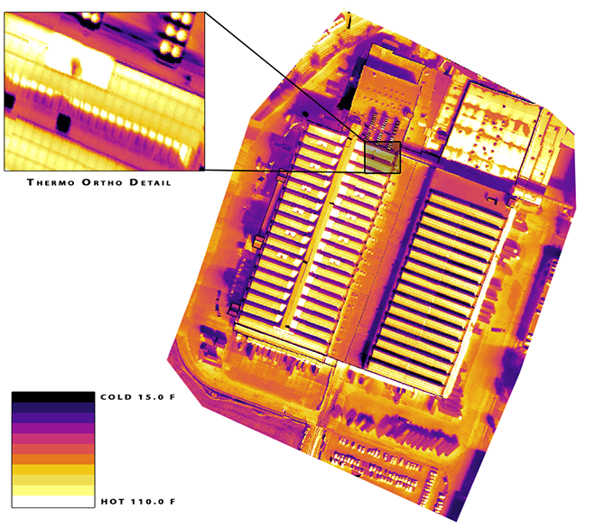
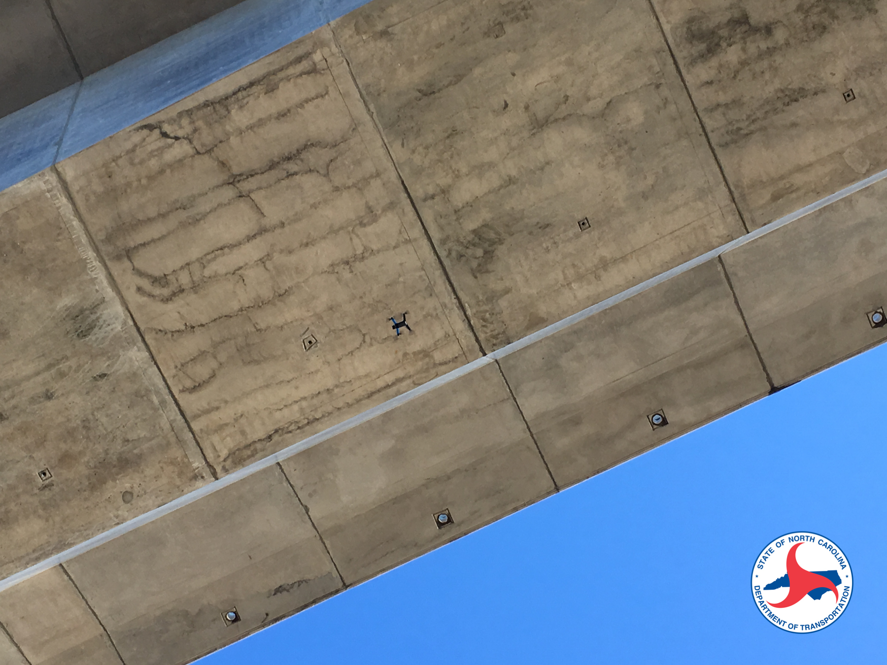
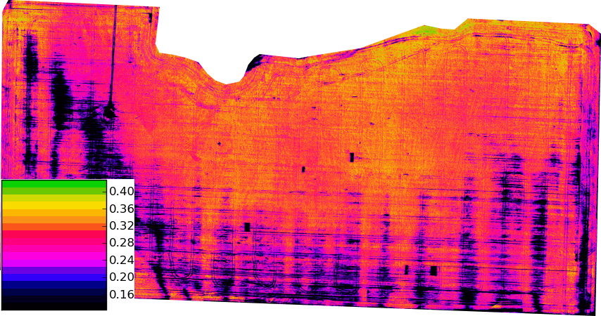
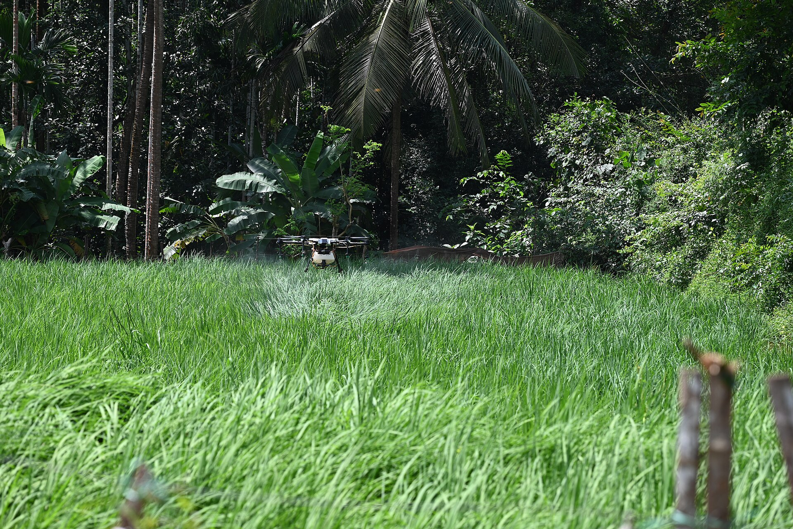

2 The Commercial Drone Landscape
Small uncrewed aircraft stopped being novelties roughly a decade ago. They are now ordinary industrial instruments — closer in role to a total station, a borescope, or a soil probe than to a hobby aircraft — and the reason is economic rather than aeronautical. A surveyor does not buy a drone because it flies; the surveyor buys it because it produces a centimetre-accurate site model in ninety minutes instead of two days. An agronomist does not buy a spray drone for its rotors; the agronomist buys it because it puts chemical on a waterlogged field that a ground rig cannot enter. In every case the aircraft is a delivery mechanism for a data product or a physical payload, and the engineering question that decides whether a mission is viable is never “can it fly?” but “what does it have to carry, how close to the ground must it fly, how long may it stay there, and which rule forbids that?”
This chapter surveys the commercial verticals in which that calculation currently comes out positive: mapping and surveying, infrastructure inspection, agriculture, security and public safety, and wildlife management. It then argues why the dominant architecture in all of them — a mass-produced airframe carrying custom autonomy software — displaced the bespoke platforms of the 2010s. The agricultural spraying vertical receives extended treatment as a worked case study, because it is the cleanest example in commercial aviation of a design driven end to end by its payload: the tank size sets the mass budget, the mass budget sets the regulatory category, the regulatory category sets the certification burden, and the droplet physics sets the flight envelope. Everything the rest of Part I develops — airframe structure, propulsion and power budgets, the regulatory framework, and field safety practice — is visible in miniature in that one case.
2.1 Learning Objectives
- Survey the major commercial drone application sectors — mapping and surveying, infrastructure inspection, agriculture, security and public safety, and wildlife management — and state for each the characteristic payload, the binding regulatory constraint, and the deliverable handed to the client.
- Explain why commodity off-the-shelf airframes combined with custom autonomy software displaced bespoke commercial platforms, in terms of where the marginal engineering value now sits in the stack.
- Apply the ground-sample-distance relation to select a survey altitude, and propagate that choice through image overlap, coverage rate, and number of flights required.
- Use agricultural spraying drones as a worked case study of payload-driven design: derive the mass budget from tank capacity, the coverage rate from swath and ground speed, the mission duty cycle from application rate, and the flight envelope from droplet-drift physics.
- Explain how specific regulatory thresholds — the 55-pound weight limit, the 400-foot altitude ceiling, and the visual-line-of-sight requirement — act as hard engineering constraints rather than administrative overhead.
2.2 Key Vocabulary
- Market vertical — an industry segment whose drone operations share a payload, a data product, and a regulatory profile distinct enough that hardware and software are specialized for it (surveying, aerial application, public safety).
- Off-the-shelf hardware — a commercially manufactured, mass-produced airframe and sensor package purchased complete rather than designed and fabricated for one operator, whose unit economics derive from production volume across many verticals.
- Payload — everything the aircraft carries that is not required to fly it: sensors, gimbals, spray tanks, lights, radios, and released cargo. Payload mass competes directly with battery mass for the same lift budget.
- Part 107 operator — in the United States, a person holding the Federal Aviation Administration (FAA) Remote Pilot Certificate issued under 14 CFR Part 107, the baseline authority for commercial small-uncrewed-aircraft flight.
- BVLOS (Beyond Visual Line of Sight) — operation in which the remote pilot cannot continuously see the aircraft unaided; prohibited under baseline Part 107 and permitted only under a specific waiver or exemption, and the single largest regulatory gate on drone economics.
- Waiver — a case-by-case FAA authorization to deviate from a specific Part 107 operating rule (visual line of sight, operations over people, night operation, one pilot per aircraft), granted on a demonstrated safety case rather than by right.
- Maximum takeoff weight (MTOW) — the greatest mass at which the aircraft is certified to leave the ground, including airframe, battery, and payload; the difference between MTOW and empty weight is the entire payload budget an engineer has to spend.
- Ground sample distance (GSD) — the real-world length on the ground represented by one pixel of an aerial image, in centimetres per pixel; the primary specification a mapping client cares about and the quantity that fixes flight altitude.
- Orthomosaic — a single large image assembled from hundreds of overlapping aerial photographs and geometrically corrected so that every pixel is viewed as if from directly overhead, making the result measurable like a map rather than merely viewable like a photograph.
- Aerial application — the dispensing of a substance (pesticide, fertilizer, seed, biological control agent) from an aircraft in flight; in the United States it is a separately certificated class of operation under 14 CFR Part 137, distinct from ordinary flight.
- Precision agriculture — farm management that treats a field as a spatially varying system, measuring and applying inputs at sub-field resolution rather than uniformly, so that the value of an aerial sensor lies in its resolution rather than merely in its coverage.
- Spray drift — the movement of applied droplets off the intended target area by wind and turbulence before they deposit; the dominant environmental hazard of aerial application and the reason chemical labels specify droplet size and buffer distances.
2.3 Five Questions That Define a Vertical
Commercial drone work looks heterogeneous from the outside — a thermographer, a crop consultant, and a police sergeant appear to have nothing in common — but every deployment answers the same five questions, and the answers are what make a vertical a vertical.
- What must the aircraft carry? A visible-light red-green-blue (RGB) camera, a long-wave infrared (LWIR) thermal sensor, a multispectral array, a light detection and ranging (LiDAR) scanner, a 40-litre chemical tank. Payload mass and power draw determine airframe class; payload optics determine altitude.
- Which rule binds? Every mission runs into one regulatory limit before the others. For a pipeline patrol it is visual line of sight; for a stadium overflight it is operations over people; for a spray aircraft it is the 55-pound weight threshold. Identifying the binding constraint first prevents designing a vehicle that is illegal to operate.
- What physics corrupts the data? Sensors measure the world, not the quantity of interest, and the gap between them is where expertise lives. Solar loading masks thermal contrast; low sun angle exaggerates surface texture; wind displaces spray droplets; vegetation reflectance shifts with leaf moisture. Flight timing is a data-quality parameter, not a scheduling convenience.
- How is the flight executed? Manual piloting, a two-dimensional lawnmower grid, a three-dimensional double grid for structure reconstruction, an orbit around a vertical asset, or a terrain-following path that holds altitude above ground rather than above launch. The pattern is chosen to satisfy a data-integrity requirement, most often uniform resolution and guaranteed image overlap.
- What does the client receive? Not raw imagery. A radiometric orthomosaic with annotated coordinates, a point cloud with volumetric cut-and-fill figures, a prescription map a spreader can execute, a written report. The final translation from telemetry to decision is the product being sold.
The remainder of this survey applies those five questions vertical by vertical.
2.4 Mapping and Surveying
Aerial mapping is the largest commercial vertical by flight hours and the one whose engineering is most fully reduced to arithmetic. The payload is a calibrated RGB camera, often supplemented by a real-time kinematic (RTK) global navigation satellite system receiver that tags each exposure with a centimetre-accurate position, or by a LiDAR scanner where vegetation must be penetrated to reach bare earth. The deliverable is an orthomosaic, a digital surface model, and — for construction and mining clients — volumetric measurements of stockpiles and excavations.
The governing relation is ground sample distance. For a camera with pixel pitch \(p\) (metres), focal length \(f\) (metres), flown at height \(H\) above the terrain,
\[\text{GSD} = \frac{p\,H}{f}.\]
This is nothing more than similar triangles: the sensor plane and the ground plane are related by the ratio of their distances from the lens node.
Worked example. Consider a 20-megapixel camera on a Four Thirds sensor, 17.4 mm wide across 5280 pixels, so \(p = 17.4\ \text{mm}/5280 = 3.30\ \mu\text{m}\), with a 12.3 mm lens. Flying at \(H = 100\) m above ground level,
\[ \begin{aligned} \text{GSD} &= \frac{(3.30 \times 10^{-6}\,\text{m})(100\,\text{m})}{12.3 \times 10^{-3}\,\text{m}} \\ &= 2.68 \times 10^{-2}\ \text{m} = 2.68\ \text{cm/pixel}. \end{aligned} \]
The image footprint is then \(5280 \times 2.68\ \text{cm} = 141\) m across the flight line and \(3956 \times 2.68\ \text{cm} = 106\) m along it. Photogrammetric reconstruction needs redundant views of every ground point; a standard specification is 75 % side overlap between adjacent flight lines and 80 % forward overlap between successive exposures. Side overlap of 75 % means adjacent lines are spaced \(0.25 \times 141 = 35.3\) m apart, so at a ground speed of 10 m/s the aircraft sweeps \(35.3 \times 10 = 353\ \text{m}^2\) per second — that is, \(353 \times 60 = 21{,}180\ \text{m}^2\), or 2.12 hectares (5.2 acres), per minute. A 20-minute working flight therefore covers \(353 \times 1200 = 423{,}600\ \text{m}^2 \approx 42\) hectares, about 105 acres, before any allowance for turns, transit, and boundary lines. Forward overlap of 80 % means successive exposures are \(0.20 \times 106 = 21\) m apart, which at 10 m/s demands a shutter interval of 2.1 seconds — a constraint that in practice caps ground speed, because the camera’s write cycle, not the airframe, becomes the bottleneck.
Now invert the relation, because clients specify resolution rather than altitude. A client requiring 1 cm/pixel forces
\[H = \frac{\text{GSD}\cdot f}{p} = \frac{(0.01)(12.3\times10^{-3})}{3.30\times10^{-6}} = 37.3\ \text{m}.\]
Area covered per flight scales as \(H^2\), so tightening the specification from 2.68 cm to 1 cm shrinks per-flight coverage by a factor of \((37.3/100)^2 \approx 0.14\) — seven times as many flights, seven times the battery cycles, seven times the processing load. This single line of algebra is the most commercially consequential calculation in the vertical, and it explains why an experienced operator interrogates a client’s stated accuracy requirement before quoting a price.
The binding regulation for mapping is usually the 400-foot (122 m) ceiling above ground level, which puts an upper bound on coverage per flight, together with the visual-line-of-sight requirement, which bounds the radius of the survey area around the pilot. Corridor mapping — roads, rail, transmission lines, pipelines — is the case where line of sight binds hardest, since the asset is by definition longer than any pilot can see, and it is therefore the vertical with the strongest commercial interest in BVLOS authorization.
2.5 Infrastructure Inspection
Inspection substitutes a thermal or high-zoom optical payload for the mapping camera and substitutes an orbital or facade-following flight pattern for the grid. Its distinguishing feature is that the useful signal is a contrast rather than a shape, and contrast is fragile.
The canonical example is commercial roof inspection. Flat commercial roofs fail when water penetrates the membrane and saturates the insulation beneath; the water is invisible from above and expensive to find by cutting test squares. Saturated insulation, however, has a far higher volumetric heat capacity than dry insulation, so it stores more energy during the day and releases it more slowly at night. An LWIR sensor flown after sunset sees the wet regions as warm anomalies against a roof that has already radiated its heat to the sky. Fly the same roof at midday and the signal vanishes: direct solar loading swamps the few-degree subsurface difference under tens of degrees of surface heating, and the thermal image reports the roof’s albedo pattern instead of its moisture. The environmental variable and the flight schedule are, here, the same engineering decision.
The flight workflow is an autonomous grid at fixed altitude — fixed so that GSD, and therefore the apparent size of an anomaly, is uniform across the mosaic — with roughly 70 % thermal overlap, since LWIR sensors have far lower pixel counts than RGB sensors and need proportionally more frames to build a coherent mosaic. The deliverable is a radiometric orthomosaic, one in which each pixel retains a calibrated temperature rather than a display colour, delivered with an annotated report giving the coordinates of each suspected intrusion so that a roofing crew can cut precisely where the water is. The general lesson generalizes to every inspection vertical: the client is not buying pixels, and a map of colours without an interpretation is not a deliverable.

Figure 2.1 is what a thermal survey actually hands over: not a photograph of a roof but a temperature field over one, uniform in scale because altitude was held constant, and readable only against the colour bar that fixes what each shade means.
Adjacent inspection applications — wind-turbine blades, cell towers, bridge soffits, electrical substations, and industrial flare stacks — swap the physics but keep the structure. Blade inspection needs an orbital pattern with the camera normal to a curved surface; bridge inspection needs upward-looking cameras and often loses satellite navigation entirely under the deck, forcing reliance on visual-inertial odometry of the kind Part II develops; substation work adds electromagnetic interference to the magnetometer and a strict operations-over-people question if the site is near a public right of way.

Figure 2.2 shows why that vertical is harder than it looks from the specification sheet: the camera points up, the pilot is looking at a structure rather than at the aircraft, and the same slab that must be photographed is what denies the receiver a satellite fix.
2.6 Agriculture: Sensing
Agriculture splits cleanly into two drone businesses that share a field but almost nothing else. The first is sensing, and it is a specialization of mapping. A multispectral camera records reflectance in several narrow bands — typically blue, green, red, a red-edge band near 720 nm, and near-infrared around 840 nm — chosen because healthy vegetation reflects near-infrared strongly while absorbing red for photosynthesis. The normalized difference vegetation index,
\[\text{NDVI} = \frac{\rho_{\text{NIR}} - \rho_{\text{red}}}{\rho_{\text{NIR}} + \rho_{\text{red}}},\]
compresses that contrast into a single scalar per pixel, and its spatial variation across a field reveals stress — drought, nutrient deficiency, disease, pest damage — days to weeks before it is visible to a person walking the rows. The deliverable is not the index map itself but a prescription map: a georeferenced instruction file that a variable-rate spreader or sprayer executes, applying more input where the crop is stressed and less where it is not. That is what makes the practice precision agriculture rather than aerial photography — the sensing output drives a machine.

The resolution is the point. Figure 2.3 is flown low enough that a single row of stressed plants is several pixels wide, which is what lets the prescription file it generates address a part of a field rather than the whole of one; the same index computed from a satellite pass at ten metres per pixel would average that structure away.
The measurement is harder than the formula suggests, because reflectance is a ratio of reflected to incident radiance and the incident term varies with sun angle, cloud, and haze between one flight line and the next. Correcting for it requires a downwelling irradiance sensor on top of the aircraft, a calibrated reflectance panel imaged before and after the flight, and a flight window near solar noon to minimize shadow. The Remote Sensing at Scale chapter later in this book develops multispectral radiometry, calibration, and index construction in full; for now the point is only that the agricultural sensing vertical is the mapping vertical with a much less forgiving relationship between flight timing and data validity.
2.7 Agriculture: Aerial Application — A Worked Case Study
The second agricultural business is aerial application, and it is worth studying in detail because nothing in the commercial drone world is so completely determined by its payload.
2.7.1 Why aircraft at all
Ground-based sprayers are cheaper per acre than anything that flies, and where they work they win. They stop working in identifiable conditions: when soil is too wet to carry a rig without compaction or rutting, when terrain is too steep or too broken for a boom, when the crop canopy has closed and wheel traffic would destroy standing plants, and when the treated block is small or irregular enough that a crewed agricultural aircraft cannot economically be dispatched to it. Crewed aerial application solves the first three but is capital-intensive, requires a suitable airstrip and a certificated pilot, and is often simply unavailable in a narrow treatment window. The drone occupies the remaining niche: fields too wet, too steep, too small, or too oddly shaped for the alternatives, plus any application where reducing human contact with the chemical is itself the objective. The same logic recurs whenever a targeted intervention must be delivered to a bounded area — including wildlife deterrence, where the goal is to affect one field rather than a county.

Figure 2.4 also shows the two features of the aircraft that the rest of this case study is about: almost all of its visible bulk is tank, and the rotor wash it uses to drive droplets into the canopy is the same flow that will carry them off the field when the wind is wrong.
The economics turn on utilization rather than on price per acre in isolation. Published extension comparisons put drone custom-hire application at roughly $16 per acre against roughly $12.50 per acre for a crewed crop duster, so on unit cost alone the drone loses. What changes the answer is ownership: the fixed capital cost of a platform amortizes over every acre it treats, so total cost per acre falls steeply with annual acreage and flattens once the machine is well used. An illustrative amortization makes the shape concrete. A $15,000 platform depreciated over a five-year service life contributes
\[\frac{\$15{,}000}{5\ \text{yr} \times 680\ \text{acre/yr}} = \$4.41\ \text{per acre}\]
at 680 acres per year, but only $1.50 per acre at 2000 acres per year. Below a few hundred acres per year the capital charge dominates and custom hire is the rational choice; above roughly a thousand acres per year, ownership wins and the operator’s real constraints become labour hours and the length of the agronomic application window rather than the purchase price. Battery replacement, pump and nozzle wear, and applicator recertification are recurring costs that this simple model omits and that a serious business case must include.
2.7.2 The mass budget
Spray drones are large multirotors built around a tank, and their published specifications reveal the design logic immediately. Representative platforms at the time of writing include the DJI Agras T50, with a 40-litre tank, a 4–11 m spray swath, 114.64 lb empty weight, 202.8 lb maximum takeoff weight, and \(\pm10\) cm hovering accuracy with RTK; the ABZ L50, with a 50-litre tank, 114.4 lb empty weight, 238 lb MTOW, and a claimed 62 acres per hour; and the EAVision J150, at 175 lb with a 20-gallon tank, a 10.5 gal/min maximum flow rate, 30 mph maximum spraying speed, and up to 65 acres per hour. Modular tank attachments — the XAG RevoSpray series for the XAG P100 platform, for instance — swap capacity and nozzle sets on an existing airframe. Specific models turn over quickly; the structural relationships among the numbers do not, and those are what follow.
Look at what those numbers do together. Water has a density of 1 kg/L, and most agricultural tank mixes are within a few percent of it. For the 40-litre machine, the payload allowance is
\[202.8\ \text{lb} - 114.64\ \text{lb} = 88.16\ \text{lb} = 39.99\ \text{kg},\]
which is, to within a rounding error, exactly the mass of a full 40-litre tank. This is not a coincidence and it is the central fact about the vertical: the airframe is sized so that a full tank consumes the entire payload margin. There is no spare lift for a heavy sensor, a second battery, or a redundant computer. Every kilogram of autonomy hardware an engineer wants to add must be traded against a litre of chemical, and the customer buys litres. The 50-litre platform shows the same structure with a small reserve: 238 lb MTOW less 114.4 lb empty gives 123.6 lb, or 56 kg, against a 50 kg full tank.
This mass budget then decides the regulatory category, because every one of these aircraft is far above the 55-pound (25 kg) ceiling that defines a small unmanned aircraft system under Part 107. A 55-pound total budget cannot accommodate a useful tank: even a 10-litre tank costs 10 kg of the roughly 25 kg total, leaving 15 kg for airframe, motors, and a battery pack that must lift 25 kg. Commercial spraying therefore lives permanently outside baseline Part 107 — a regulatory fact that follows directly from the density of water.
2.7.3 Coverage rate and duty cycle
Coverage rate is swath width times ground speed. Working backward from the 20-gallon platform’s published figures — up to 65 acres per hour at up to 30 mph — gives an implied effective swath:
\[65\ \frac{\text{acre}}{\text{hr}} \times 4046.9\ \frac{\text{m}^2}{\text{acre}} = 263{,}000\ \frac{\text{m}^2}{\text{hr}} = 73.1\ \frac{\text{m}^2}{\text{s}},\]
\[w = \frac{73.1\ \text{m}^2/\text{s}}{13.4\ \text{m/s}} = 5.5\ \text{m}.\]
That is a physically sensible number: a nozzle boom of two to three metres, widened by rotor downwash that carries droplets outward and downward before they deposit. It also shows that the manufacturer’s headline coverage figure is an instantaneous spraying rate, not a field rate.
The field rate is set by the tank, and the arithmetic is unforgiving. Drone application is deliberately low-volume — typically 10 to 20 litres per hectare, against 100 or more for a ground rig — because carrying water is the whole cost. At 15 L/ha, a 40-litre tank treats
\[\frac{40\ \text{L}}{15\ \text{L/ha}} = 2.67\ \text{ha} = 6.6\ \text{acres}\]
before it is empty. To sustain the advertised 62 acres per hour, the operator must complete about 9.4 tank cycles per hour, one every 6.4 minutes, each including the return leg, the refill, and — since a fully loaded spray drone’s flight endurance is on the order of eight to ten minutes — a battery swap. The binding constraint on a spraying operation is not flight time or software; it is ground logistics. A crew running one aircraft with a mix tank, a generator, and a bank of charging batteries is the actual production system, and the aircraft is one component of it. This is the operational reality behind an otherwise innocuous specification sheet, and it is the kind of second-order consequence that only appears when the numbers are propagated.
2.7.4 Droplet physics and the flight envelope
The dominant environmental hazard of aerial application is drift: droplets that leave the nozzle but never reach the target, carried away by wind. Drift wastes chemical, damages neighbouring crops, contaminates water, and exposes people. It is also almost entirely a function of droplet size, and that is a parameter the operator sets through nozzle selection and pressure.
A droplet falling at terminal velocity in still air has reached the speed at which drag balances weight. For a small droplet, where the Reynolds number is below about one and viscous drag dominates, Stokes’ law gives
\[v_t = \frac{\rho_l\, d^2\, g}{18\,\mu_a},\]
with \(\rho_l\) the liquid density, \(d\) the droplet diameter, \(g\) gravitational acceleration, and \(\mu_a\) the dynamic viscosity of air. For a 100 \(\mu\)m water droplet at sea level (\(\rho_l = 1000\) kg/m³, \(\mu_a = 1.81 \times 10^{-5}\) Pa·s),
\[ \begin{aligned} v_t &= \frac{(1000)(100\times10^{-6})^2(9.81)}{18\,(1.81\times10^{-5})} \\ &= \frac{9.81\times10^{-5}}{3.26\times10^{-4}} = 0.30\ \text{m/s}. \end{aligned} \]
A check on the assumption: \(\mathrm{Re} = \rho_a v_t d/\mu_a = (1.2)(0.30)(10^{-4})/(1.81\times10^{-5}) \approx 2\). Stokes’ law is strictly valid only for \(\mathrm{Re} \ll 1\), so a 100 \(\mu\)m droplet sits at the upper edge of the regime rather than safely inside it: drag is already mildly nonlinear, and the 0.30 m/s figure overestimates the true settling velocity by roughly 20 % (a standard nonlinear-drag correction puts the actual value near 0.25 m/s). The estimate is good enough to reason with, but it is optimistic, and the drift distance computed from it below is correspondingly a lower bound.
Now propagate that into a drift estimate. Released from \(h = 3\) m above the canopy, the droplet needs \(t = h/v_t = 3/0.30 = 10\) s to settle. In a 3 m/s crosswind — a gentle breeze, well inside conditions an operator would consider flyable — it travels
\[x = U\,t = (3\ \text{m/s})(10\ \text{s}) = 30\ \text{m}\]
downwind before it lands. Thirty metres of displacement means the chemical is not on the target field at all.
Coarsen the spray to a 300 \(\mu\)m volume median diameter and the picture changes qualitatively. Stokes’ law would predict \(v_t\) scaling as \(d^2\), giving 2.7 m/s, but at that size \(\mathrm{Re} \approx 50\) and drag is no longer linear in velocity; the measured terminal velocity of a 300 \(\mu\)m water droplet is closer to 1.2 m/s. Settling time falls to 2.5 s and drift to about 7.5 m — roughly a fourfold reduction from a threefold change in diameter, and nearer fivefold once the Stokes overestimate at 100 \(\mu\)m noted above is corrected. This is precisely why chemical labels specify droplet-size categories rather than leaving nozzle choice to the operator, and why they pair those categories with downwind buffer distances and maximum wind speeds. It is also why release height is a controlled parameter: drift is linear in \(h\), so flying a metre lower cuts drift by a third.
The competing pressure is that very coarse droplets bounce off leaves and reach the canopy floor without depositing, and that fewer, larger droplets give sparser coverage for the same volume. Aerial application is therefore an optimization between drift and efficacy, conducted through nozzle selection, boom pressure, release height, ground speed, and the wind window in which flight is permitted at all. Rotor downwash complicates it further by adding a strong induced flow that drives droplets into the canopy — an advantage for penetration and a hazard for drift when the aircraft banks or turns and the wake tilts.
The single-droplet Stokes calculation above is a first-order estimate. Regulatory drift assessment uses Lagrangian dispersion models that track a full droplet-size spectrum through the aircraft’s wake, accounting for evaporation of the droplet during descent (which shrinks it and therefore worsens drift as it falls), atmospheric stability class, and the rotor-induced velocity field. Readers who intend to work in aerial application should study a spray-drift model such as AGDISP alongside the droplet-size classification standards that chemical labels reference, and should note that the wake structure of a multirotor differs substantially from the fixed-wing wake for which most of that modelling literature was developed.
2.7.5 The regulatory stack
Aerial application is the vertical with the deepest regulatory stack in commercial drone work, because two independent federal regimes apply simultaneously: aviation law governs the aircraft, and pesticide law governs the substance.
On the aviation side, the operator needs the Part 107 remote pilot certificate as a baseline. Dispensing itself is a separate class of operation, certificated under 14 CFR Part 137 (Agricultural Aircraft Operations), which covers the dispensing of chemicals and agricultural products from aircraft and was written for crewed agricultural aviation. Because every practical spray drone exceeds 55 pounds, the aircraft falls outside Part 107 entirely and requires an exemption issued under 49 U.S.C. § 44807, the statutory authority under which the FAA permits operations by uncrewed aircraft that do not fit the small-UAS rule. Aircraft registration is required, and Part 137 operations have historically carried a medical-certificate expectation inherited from crewed agricultural flying, which operators of uncrewed agricultural aircraft address through the terms of their exemption. Operators commonly seek further waivers for night operation and, in fleet operations, for one remote pilot supervising multiple aircraft. Rulemaking in this area is active — a dedicated framework for routine BVLOS operations has been under development — so any specific operation must be planned against the currently effective rule set rather than against a textbook.
On the chemical side, federal pesticide law imposes an entirely separate certification. Applicators are classified as private (applying restricted-use pesticides on land they own or rent, in the production of an agricultural commodity) or commercial (applying for hire, or on land they do not control), a distinction that turns on land tenure rather than on business size. Federal certification standards define ten categories of applicator classification by application setting — agricultural pest control, forest, ornamental and turf, seed treatment, aquatic, right-of-way, industrial and institutional, public health, regulatory, and demonstration and research — and an applicator must be certified in each category in which they work. Certification requires passing written examinations and completing training, and it must be renewed on a recurring schedule. States, territories, and tribes add their own certification and licensing requirements on top of the federal standard, so an operator working across a state line generally needs a second certification. Underlying all of it is the principle that the pesticide label is legally binding: the label’s stated application rate, droplet size, buffer, wind limits, and re-entry interval are enforceable requirements, not guidance.
The engineering consequence is that the certification burden — cost, examination time, and recurring recertification — is a real fixed cost of the business that belongs in the amortization model above, and that the fastest way to make a technically excellent spray system commercially worthless is to design it so that it cannot be operated legally.
2.7.6 Alternate uses of the same platform
The tank is a general-purpose dispensing mechanism, and once an operator holds the certifications, the same airframe supports adjacent work: liquid fertilizer, fungicide, and herbicide application; dry-material spreading of seed, granular fertilizer, and cover crop with a swapped spreader module; targeted invasive-species and brush control on terrain no ground rig can enter; mosquito and public-health vector control over standing water; release of biological control agents; and forestry and reforestation seeding. Non-agricultural adaptations of the same payload include firefighting gel application and de-icing. Each of these changes the substance, the applicator category, and often the label requirements, but not the aircraft — which is the strongest possible illustration of the off-the-shelf-plus-software thesis developed in the next section.
2.8 Security and Public Safety
Security work substitutes persistence for coverage. The payload is typically a stabilized RGB camera with strong optical zoom paired with a thermal sensor, since the operationally interesting hours are at night, and the flight profile is a slow orbit or a hover at altitude rather than a grid. Three regulatory constraints dominate. First, meaningful patrol coverage requires BVLOS authorization, without which the aircraft cannot leave the pilot’s sight. Second, security flying frequently occurs over people, which is separately restricted and gated on the aircraft’s category and its demonstrated injury risk. Third, night operation is now permitted under Part 107 subject to anti-collision lighting and training requirements, which is what made the vertical viable at all.
The distinctive operational pattern is drone as first responder: an aircraft stationed on a rooftop dock launches automatically on a dispatched call, arrives ahead of ground units, and streams live video to responders en route so that the nature of the incident is known before anyone arrives. This requires BVLOS authorization, an automated launch and recovery enclosure, redundant command and control links, and detect-and-avoid capability adequate to satisfy the safety case. Tethered aircraft occupy an adjacent niche, trading mobility for effectively unlimited endurance by drawing power up a cable, which suits fixed-point event and perimeter overwatch.
Privacy is the constraint most likely to be underestimated by an engineer. Federal aviation rules govern how an aircraft may fly, not what it may record; recording is governed by a patchwork of state surveillance statutes, municipal ordinances, constitutional limits on government searches, and institutional policy. Remote identification requirements mean the aircraft broadcasts its identity and position to anyone with a receiver, which cuts both ways: it constrains covert operation and it provides accountability. The correct engineering posture is to treat data retention, access control, and redaction as system requirements designed in from the start, a theme Part V returns to at length.
2.9 Wildlife Management
Wildlife work uses drones in three distinct modes, and it is the vertical this book returns to most often.
The first is survey and census. A thermal sensor flown at night detects endothermic animals against a cooled background far more reliably than a daytime RGB camera detects them against vegetation, and an automated detection model turns a mosaic into a population count. The engineering problems are resolution — an animal must span enough pixels for a detector to classify it, which fixes altitude through the same GSD relation used in mapping — and double counting, which is why survey grids specify overlap and why detections must be deduplicated in a common geographic frame.
The second is behavioural and habitat monitoring: repeat multispectral or RGB survey of nesting sites, wetlands, or herd ranges, where the deliverable is change over time rather than a single snapshot.
The third is active management, in which the aircraft does not merely observe but intervenes — hazing birds from an airfield or a crop, moving a herd, or dispersing a flock from a protected area. This mode raises the sharpest questions in the vertical, because the same disturbance that makes deterrence effective is a documented stressor on the animals involved, and wildlife-harassment law in most jurisdictions requires a permit for exactly this reason. Protected species add federal restrictions on approach distance and disturbance regardless of intent.
This third mode is where the book’s running example lives. The Goose Management System sketched in the preface — a Robot Operating System 2 (ROS 2) vehicle that searches a protected area, detects geese with onboard computer vision, and executes an autonomous deterrence maneuver — is precisely the wildlife-management vertical in miniature, with every one of the five defining questions instantiated: the payload is a depth camera and a companion computer; the binding constraint is visual line of sight plus wildlife-disturbance permission; the corrupting physics is illumination and background clutter in the detector; the flight workflow is an autonomous search grid transitioning to a pursuit behaviour; and the deliverable is the deterrence itself rather than a report. That mapping is worth carrying forward: the chapter that closes this Part assembles the system end to end, and every subsequent Part builds one of those five answers.
2.10 Why Off-the-Shelf Hardware Plus Custom Software Won
The final structural observation of this chapter concerns architecture. Around 2015, a commercial drone operation with unusual requirements built its own aircraft. Today, in every vertical surveyed above, the dominant pattern is a mass-produced airframe carrying custom software. Four forces produced that shift.
The airframe commoditized. Brushless motors, electronic speed controllers, carbon-fibre structure, and lithium-polymer cells are high-volume commodities whose price and quality are set by markets far larger than aviation. A team fabricating its own airframe pays more for worse components and inherits a maintenance and spares problem, while gaining nothing a customer can perceive. Airframe design remains genuinely necessary only where the payload is unusual enough that no product exists — which is exactly the spray-drone case, where tank geometry drives the whole vehicle.
Flight control became a solved, open commodity. Mature open-source autopilot firmware running on inexpensive standardized flight-controller hardware provides state estimation, stabilization, failsafe logic, and mission execution that no small team could match from scratch. Attitude control — the innermost loop of the sense–think–act hierarchy laid out at the end of this Part, and the quantitative subject of Part II — is now something an engineer configures rather than invents.
Companion compute became cheap and small. A single-board computer with a hardware neural-network accelerator, drawing a few watts and weighing under a hundred grams, can run real-time object detection onboard. This is the enabling change for autonomy: the aircraft no longer needs to send video to a ground station and wait for an answer. Part III develops exactly this capability.
Value migrated up the stack. Because everyone can buy the same airframe, sensor, and autopilot, no operator differentiates on hardware. Differentiation comes from the flight-planning logic that guarantees data integrity, the processing pipeline that turns imagery into a measurement, the domain model that interprets the measurement, and the deliverable that makes it actionable. Those are all software and expertise. An operator’s defensible advantage is knowing that a roof must be flown after dusk, that a 1 cm GSD specification costs seven times as many flights, and that a 100 \(\mu\)m droplet drifts thirty metres in a gentle breeze.
The consequence for a student of drone computing is direct: the interesting engineering is no longer in making the vehicle fly, but in the layer that decides where it flies, what it measures, and what the measurement means. That layer is the subject of the rest of this book — and it is why the Goose Management System is built on a purchased airframe and a purchased flight controller, with every original line of work living in the autonomy stack above them. The chapters that follow work upward from exactly that purchased hardware, beginning with the airframe and its propulsion: what those components have to do, and how an engineer chooses them competently enough to earn the right to ignore them afterwards.
2.11 Check Your Understanding
- A client requires a 1.5 cm/pixel orthomosaic of a 40-hectare site. Using the camera from the worked example (\(p = 3.30\ \mu\)m, \(f = 12.3\) mm, 5280 × 3956 pixels), find the required flight altitude and estimate the number of 20-minute flights needed at 75 % side overlap and 10 m/s ground speed.
Altitude follows from inverting the GSD relation: \(H = \text{GSD}\cdot f/p = (0.015)(12.3\times10^{-3})/(3.30\times10^{-6}) = 56.0\) m. The footprint width is \(5280 \times 0.015\ \text{m} = 79.2\) m, so at 75 % side overlap the line spacing is \(0.25 \times 79.2 = 19.8\) m. Coverage rate is \(19.8 \times 10 = 198\ \text{m}^2/\text{s}\), or \(198 \times 1200 = 237{,}600\ \text{m}^2 = 23.8\) ha per 20-minute flight. Forty hectares therefore needs \(40/23.8 = 1.7\), so two flights — plus margin in practice for turns at the end of each line, transit to and from the launch point, and the extra lines needed to overfly the site boundary.
- Explain why a commercial roof inspection is flown after sunset rather than at midday, and state what physical property of the target makes the anomaly detectable at all.
The detectable signal is a temperature difference between saturated and dry insulation, which exists because water has a much higher volumetric heat capacity than dry roofing material and therefore stores more energy and releases it more slowly. At midday, direct solar loading heats the whole roof surface by tens of degrees and swamps the few-degree subsurface contrast; the thermal image then reports variation in surface absorptivity rather than subsurface moisture. After sunset the dry roof radiates its heat to the sky and cools quickly while the wet regions release stored energy slowly, so they appear as distinct warm anomalies. Timing is a data-quality parameter, not a convenience.
- A spray drone has an empty weight of 52 kg and a maximum takeoff weight of 92 kg. Its manufacturer offers a 40 L tank. An engineer proposes adding a 3 kg multispectral sensing package so the aircraft can map and spray on the same sortie. Evaluate the proposal quantitatively.
The payload budget is \(92 - 52 = 40\) kg, which a full 40 L tank of water-density mix consumes exactly. Adding 3 kg of sensor forces the tank to be filled to at most 37 L — a 7.5 % reduction in chemical per sortie. At a 15 L/ha application rate, area treated per tank falls from 2.67 ha to 2.47 ha, so covering a given field requires about 8 % more tank cycles, and since ground logistics (refill plus battery swap) is the binding constraint on field rate, the whole operation slows by roughly that fraction. The proposal is not impossible, but it trades production capacity for a capability the operator may be able to obtain more cheaply by flying a separate small mapping aircraft. This is the general form of the payload argument: on a spray platform, every kilogram of added hardware is paid for in litres.
- Using Stokes’ law, compare the downwind drift of a 150 \(\mu\)m droplet released 2 m above the canopy in a 2 m/s crosswind with that of the same droplet released at 4 m in a 4 m/s crosswind. What does the comparison say about which operational parameter an operator should control first?
Terminal velocity is \(v_t = \rho_l d^2 g/(18\mu_a) = (1000)(150\times10^{-6})^2(9.81)/(18 \times 1.81\times10^{-5}) = 0.68\) m/s. In the first case the settling time is \(2/0.68 = 2.9\) s and the drift is \(2 \times 2.9 = 5.9\) m. In the second, the settling time is \(4/0.68 = 5.9\) s and the drift is \(4 \times 5.9 = 23.5\) m — four times as far, because drift \(x = Uh/v_t\) is linear in both release height and wind speed, so doubling both quadruples the result. Wind speed is not under the operator’s control, only the decision whether to fly; release height is directly controllable, and is the parameter to reduce first. Droplet diameter is even more powerful, since \(v_t\) scales as roughly \(d^2\) in the Stokes regime, which is why label-specified droplet-size categories exist. Note that at 150 \(\mu\)m the droplet Reynolds number is already about 7, so Stokes’ law somewhat overestimates \(v_t\) and therefore underestimates both drift figures; the ranking of the two cases is unaffected, but the absolute numbers should be treated as optimistic.
- Why does essentially every commercial spraying drone fall outside baseline Part 107, and what does that imply about the regulatory work required before the first flight?
Part 107 applies to small unmanned aircraft with a maximum takeoff weight below 55 lb (25 kg), and that budget cannot accommodate a commercially useful tank: agricultural mix has roughly the density of water, so even a 10 L tank consumes 10 kg of the 25 kg total, leaving too little for an airframe and battery capable of lifting the result. Real platforms have MTOWs of 200 lb and above. The consequence is that the operator needs an exemption under 49 U.S.C. § 44807 for the over-55-pound aircraft, plus certification under Part 137 for the dispensing operation itself, plus a Part 107 remote pilot certificate as a baseline, plus aircraft registration — and separately, under pesticide law, applicator certification in the correct private-or-commercial classification and in each relevant federal category, along with any state, territorial, or tribal certification that applies. The regulatory pathway is measured in months and is a fixed cost of entering the business.
- The chapter argues that commercial operators no longer differentiate on hardware. Given that everyone can buy the same airframe, sensor, and autopilot, identify three places where an operator’s engineering work still creates advantage, and connect each to a later Part of this book.
Acceptable answers include: (a) flight-planning and mission logic that guarantees data integrity — correct altitude for the specified GSD, guaranteed overlap, terrain following, and the search or coverage pattern itself, which Part II and Part IV develop; (b) onboard perception, since running detection on the aircraft rather than on a ground station changes what behaviours are possible in flight, developed in Part III; (c) the processing and interpretation pipeline that converts raw sensor data into a measurement and then into an actionable deliverable, together with the integration, diagnostic, and ethical judgement needed to make it work in the field, which Part V addresses. The common thread is that all three are software and domain expertise layered above commodity hardware.
2.12 Try It
Pick one commercial vertical that this chapter did not treat in depth — options include wind-turbine blade inspection, bridge and dam inspection, cell-tower audit, mine stockpile volumetrics, search and rescue, film and broadcast, delivery of medical samples, or maritime and port survey — and write a one-page specification that answers the five defining questions in order.
Be quantitative wherever the chapter was quantitative. State the payload and, if your vertical is imaging-based, use the GSD relation to compute the flight altitude your resolution requirement implies, then propagate it to coverage per flight. Name the single binding regulation, not a list, and justify why that one binds before the others. Identify one environmental variable that could corrupt your data and explain the physics of how it does so, including what time of day or season you would fly to avoid it. Specify the flight pattern and say what data-integrity requirement forces it. Finally, describe the deliverable in the form a non-specialist client would act on — and state explicitly what decision it lets them make.
Then perform the test that separates a specification from a wish: find one number in your answer that, if the client tightened it by a factor of two, would change your aircraft, your regulatory pathway, or your price. In the mapping vertical that number is GSD; in aerial application it is tank capacity. Knowing which number is load-bearing in your own vertical is the whole skill this chapter is trying to build.
Related Lab: No lab currently maps to this chapter.